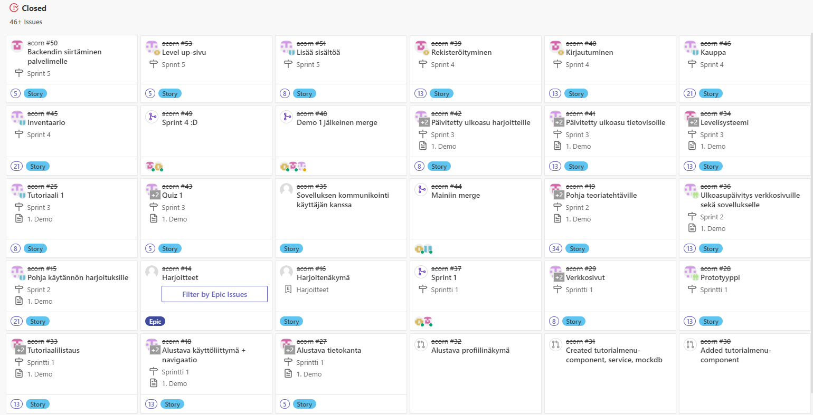

"Kaikilla on mahdollisuus opiskella kitaransoittoa matalalla kynnyksellä"
Alunperin visio syntyi ollessani kävelyllä ennen konseptointipalaveria ajatellessani, että onko muusikoille olemassa Duolingon tapaista apusovellusta.
Pelilliset ominaisuudet alusta asti mukana.
Visio oli aluksi täysin hukassa (esimerkiksi äänitunnistus ei kuulunut alkuperäisiin suunnitelmiin lainkaan)
Muotoutui ajan myötä sekä opettajien, että ryhmän jäsenten kysymysten myötä
Itselläni ei ollut minkäännäköistä itsevarmuutta vision suhteen ennen ensimmäisen demon myötä saatuja positiivisia palautteita
Visio muotoutui nykyiseen muotoonsa ennen demoa 2, alunperin se oli vain "kitaransoiton opettelua matalalla kynnyksellä"
Nimeksi valittiin pitkän pohdinnan jälkeen Acorn, koska se on lyhyt sekä ytimekäs. Sen piti olla alunperin projektinimi, mutta tässä vaiheessa se on vakiintunut
sovelluksen lopulliseksi nimeksi.
Alkuperäinen parissa minuutissa photoshoppaamani konseptikuva ja se on alusta asti ohjannut maskottien tyyliäFlinga-taulu, jossa pohdittiin nimiehdotuksia sovellukselle
sprint 1
Prototyyppi
Yhteyden muodostaminen frontendistä tietokantaan
Tutoriaalivalikko
Alustava käyttöliittymä
sprint 2
Pohja teoriatehtäville
Pohja harjoitteille
Ulkoasu mukailemaan prototyyppiä
sprint 3
Ensimmäinen quiz
Ensimmäinen tutoriaali
Silmäkarkkia tietovisoihin ja harjotteisiin
Progressio
sprint 4
Inventaario
Kauppa
Rekisteröityminen
Kirjautuminen
sprint 5
Backendin siirtäminen palvelimelle
Lisää sisältöä
Level up-sivu
Kitaraviritin (ei saatu valmiiksi)
product backlog
Käyttäjäkertomukset olivat minulle todella hankalia hahmottaa alussa
Toisessa sprintissä ymmärsin jo todella paljon paremmin käyttäjäkertomuksien tarkoituksen
Käyttäjäkertomukset ja tyytyväisyyskriteerit suunniteltiin yhdessä koko tiimin kesken
Tällöin kaikki ymmärsivät täysin, mitä mikäkin käyttäjäkertomus piti sisällään
Tämän takia myöskään backlog itemien suuruus ei tuottanut suurempia ongelmia
Backlog itemit olisivat kuitenkin voineet olla paljon pienempiä
Jälkeenpäin mietittynä useampi backlog item oli Epic-kokoisia, mutta emme osanneet järkevästi pilkkoa
niitä pienempiin osiin
Product Backlogia silmäillessä sovellus hahmottui kokonaisuutena hyvin

Acornin product backlog Zenhubissa viiden sprintin ajalta, käyttämämme käyttäjäkertomukset olivat kautta projektin todella laajoja
Käyttäjäkertomus ensimmäisessä sprintissäKäyttäjäkertomus toisessa sprintissäKäyttäjäkertomus neljännessä sprintissä
sprintit
Teimme viisi täyttä sprinttiä, kuudennen sprintin suuri osa tiimistä piti lomana
Sprintin suunnittelussa kyselin laajalti tiimin jäseniltä mielipiteitä sen suhteen, että mitä backlog itemeitä otetaan työn alle
Työmääräarviot päätettiin planning pokerilla
Työmäärien arviointi oli todella pitkälle hyvin vaikeaa, lähinnä siksi että käsiteltävät työtehtävät olivat uusia
asioita koko tiimille
Daily Scrumien ulkopuolellakin keskustelin jatkuvasti tiimin jäsenten kanssa heidän edistymisestään, joten olin koko projektin
todella hyvin perillä siitä, että mitä kukin teki ja missä vaiheessa työtä oltiin
Sprinteissä työskentely opetti todella hyvin paineensietokykyä ja työtehtävien suunnittelua siten, että ne saadaan mahdutettua tarkkoihin aikaraameihin.
Myös kommunikaation tärkeys korostui.
tuotteen esittely
Product Ownerina olin vastuussa sovelluksen esittelystä demotilaisuuksissa
Ensimmäinen kokemus sovelluksen pitchaamisesta ja esittelystä oli Expan puheenjohtaja Tuomas Roiniselle, jolta saatiin
paljon hyviä vinkkejä sovelluksen tulevaisuutta ajatellen
Ensimmäinen demotilaisuus meni todella hyvin
Aloitettiin valmistautuminen ajoissa
Oltiin saatu kaikki sprintin työt hyvissä ajoin myös valmiiksi
Saatiin todella hyvää palautetta, mikä vaikutti todella paljon tiimin moraaliin
Toinen demo meni puolestaan todella huonosti
Aloitettiin valmistautuminen demoa edeltävänä päivänä
Yleisölle testattavaksi annettu demo ei toiminut yhden backendissä olleen pienen alkukirjaimen takia, eli buildi pitää jatkossa testata hyvissä ajoin ennen demoa
Tätä myös edelsi ainoa sprintti, jolloin tekeminen jäi todella pahasti kesken monilta osin
Demo 2:sta kuitenkin opimme todella paljon valmistautumisen tärkeydestä ja sen, että perusasiat pitää aina tarkistaa,
vaikka ongelma näyttäisi monimutkaiselta
 Alkuperäinen parissa minuutissa photoshoppaamani konseptikuva ja se on alusta asti ohjannut maskottien tyyliä
Alkuperäinen parissa minuutissa photoshoppaamani konseptikuva ja se on alusta asti ohjannut maskottien tyyliä
 Flinga-taulu, jossa pohdittiin nimiehdotuksia sovellukselle
Flinga-taulu, jossa pohdittiin nimiehdotuksia sovellukselle
 Käyttäjäkertomus ensimmäisessä sprintissä
Käyttäjäkertomus ensimmäisessä sprintissä
 Käyttäjäkertomus toisessa sprintissä
Käyttäjäkertomus toisessa sprintissä
 Käyttäjäkertomus neljännessä sprintissä
Käyttäjäkertomus neljännessä sprintissä